Software User Guide
Requirements
Host PC (Windows 10 or later)
with administrator and internet access
1920 by 1080 or greater screen resolution, recommended
The AD-BMSE2E3W-SL GUI also referred as the Light EV BMS GUI is a PC-based Graphical User Interface (GUI) tool designed to work in conjunction with the AD-BMSE2E3W-SL board.
MyAnalog.com account is required to download the software.
Follow the steps below to create a MyAnalog account:
Request for Software Access
Note
Send the following details to this email address to request for software access:
LEV_CSESupport@analog.com
MyAnalog email address
Company
Country
Purpose/Projects
Software Download
Download from: AD-BMSE2E3W-SL Version 1.0.0
You will be directed to the Software Package Download page. Tick the checkbox and click the I Accept button to indicate acceptance of the license agreement.
Click the
Downloadbutton to download the installer.
Note
When software updates or new versions of the software are available, Analog Devices sends a notification to the email address associated with the MyAnalog account used to download the original software package.
GUI Installation
Double-click on ad-bmse2e3w-sl-rel1.0.0.exe to install the program to your computer.
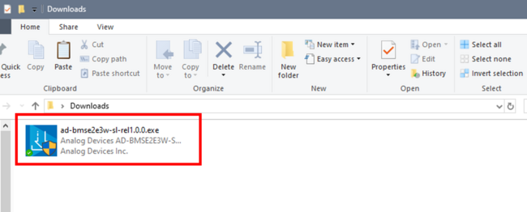Accept the license terms and click Next to proceed with the installation. The default installation directory is in
C:\Analog Devices\
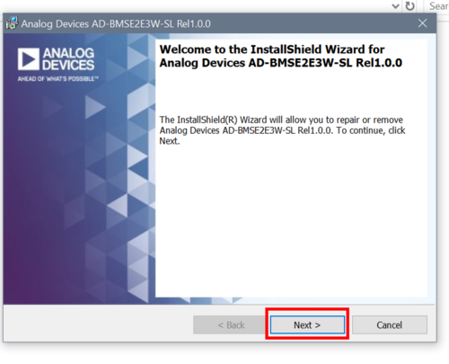
Locate the light_ev_bmsv1.0.0.hex file inside the AD-BMSE2E3W-SL installer files folder.
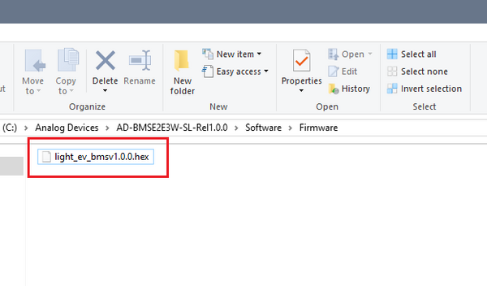C:\Analog Devices\AD-BMSE2E3W-SL-Rel1.0.0\Software\FirmwareDrag and drop the .hex file into the DAPLink drive to flash the program on the MCU.
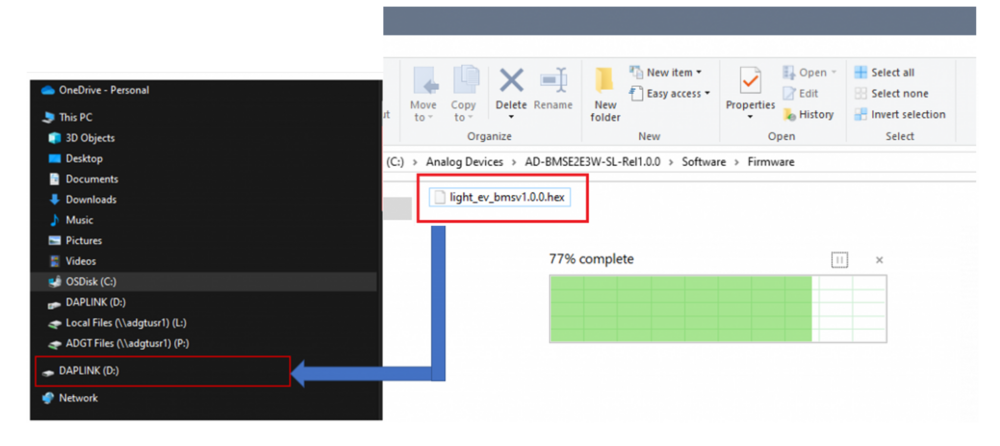Find the Light_EV_BMS_GUI.exe file inside the AD-BMSE2E3W-SL installer files folder.
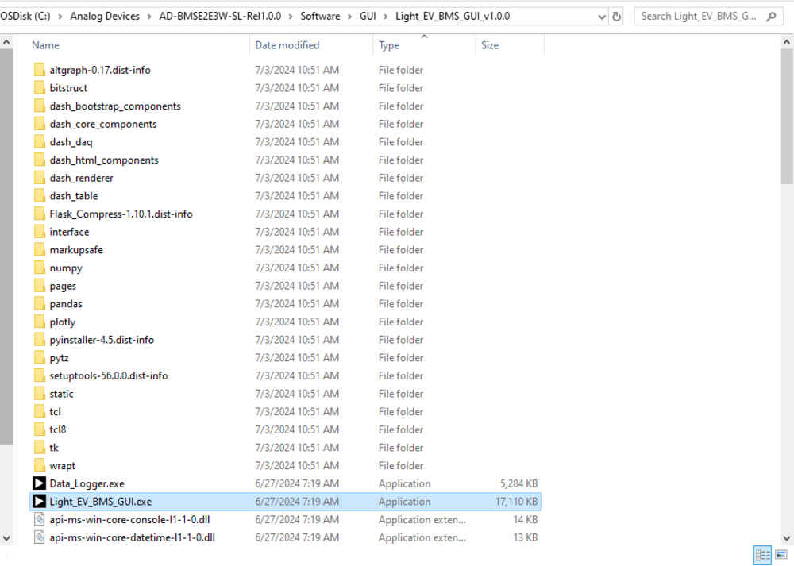C:\Analog Devices\AD-BMSE2E3W-SL-Rel1.0.0\Software\GUI\Light_EV_BMS_GUI_v1.0.0Double-click the Light_EV_BMS_GUI.exe file to open the program. You should see a script running in the background separately and the landing page running in the browser.
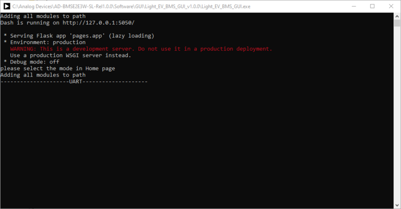 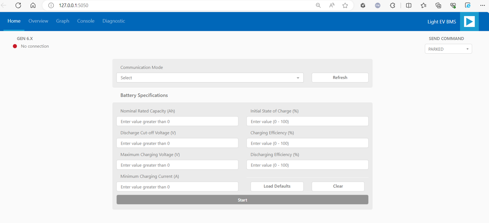
Interface Setup
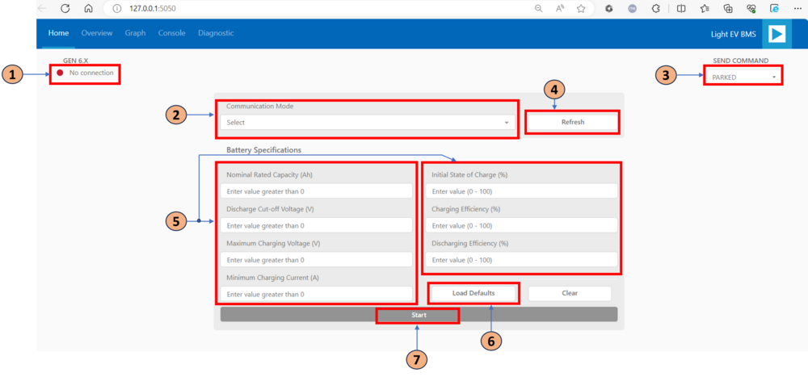Set the jumper configuration based on the communication mode being used: UART or CAN.
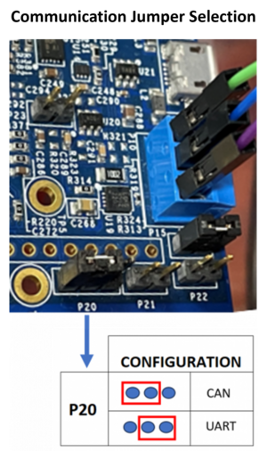On the GUI landing page, hover to the Communication Mode dropdown menu. Select UART COM followed by the specific port number if using UART, or CAN if using CAN.
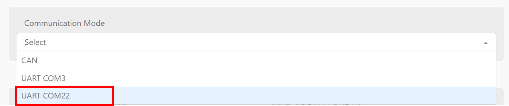Press the
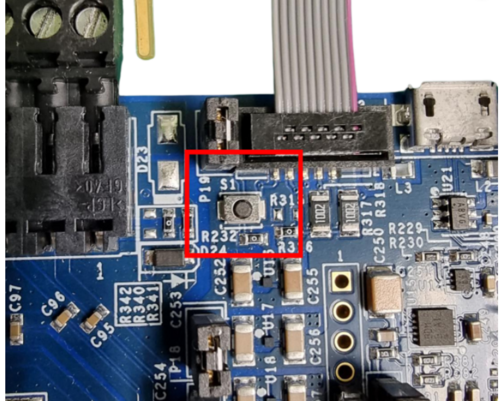RESETbutton every time the hardware set up is changed.Click the
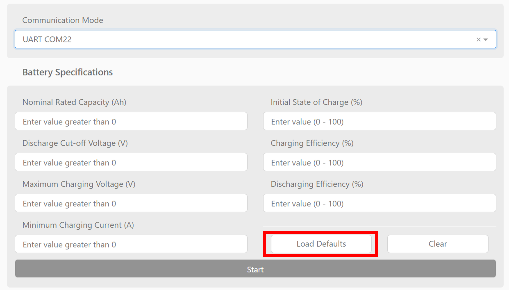Load Defaultsbutton to set the initial entry values for the different parameters needed for the State of Charge (SoC) and State of Health (SoH) calculations.Click the
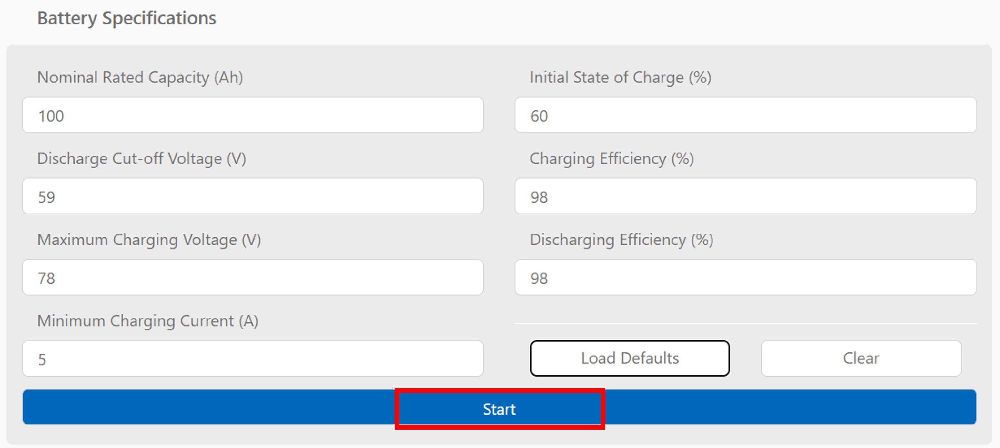Startbutton to begin the measurements.
Tabs
Overview
The Overview tab features plots for stack voltage, module current, max charge current, max discharge current, cell voltages, cell temperatures, and state of the battery. This tab also allows setting of the vehicle state, which by default is set to “PARKED”.
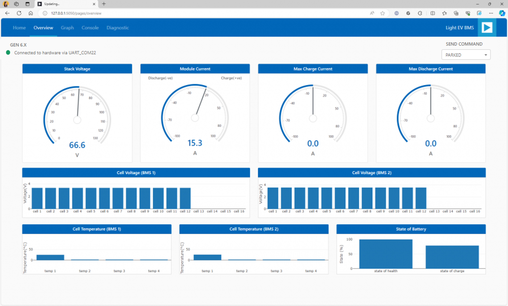Graph
The Graph tab enables checking the progression of the readings for different parameters such as the cell voltage, temperature, SoC, SoH, and pack voltage and current.
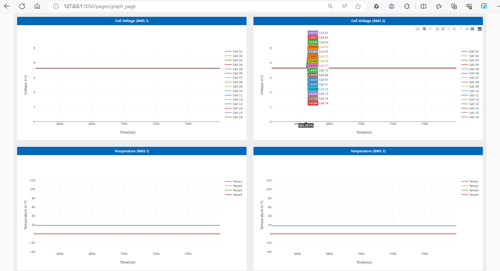Console
Presents the actual numerical data being fetched by the UI in a tabular form. This tab allows the user to study or qualify the data, if needed.
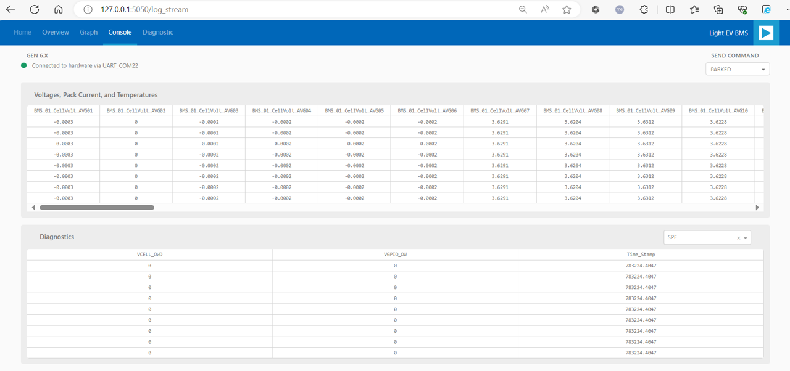Diagnostic
This tab enables the user to check any anomaly detected by the BMS devices. Some of these diagnostic functions are cell overvoltage and undervoltage, open wire detection, and others.
Indicators:
Green color = passed (or no issue detected)
Red color = failed
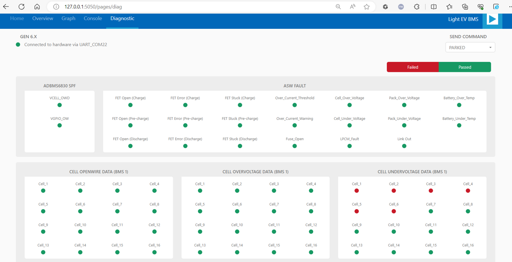